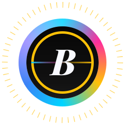
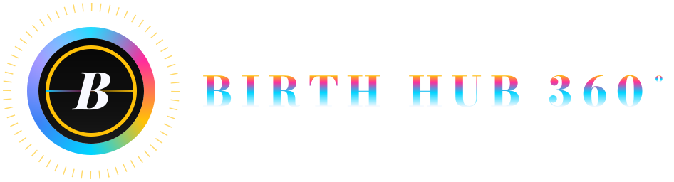

Frente 01 · Auditoria · 2026-11-13
O que a identidade já decidiu, e onde ela se contradiz
Auditoria estática do repositório contra a fonte de verdade V2.0. Resultado central: a paleta da missão já existe na identidade Neon oficial; os conflitos reais estão em Light, grafia, contagens e em arquivos de governança desatualizados.
Top 10 achados
- Íris #8B7DFF e Light #F4F7FB TÊM origem prévia C02
Premissa corrigida: estão em birthhub360.json:72/89, Brandbook:58, Manual Visual:63, V4_CINEMATIC:20-25, vite.config.ts:23, e #8B7DFF dentro dos SVGs do logo. A paleta da missão já é a identidade Neon oficial. - .claude/CLAUDE.md está obsoleto A-01
Descreve "Strategic Command Center" (#D4AF37/#7C3AED/#1677FF/#061A3A); globals.css é Neon (--brand #00d4ff). Não editado (arquivo protegido). - Light tem 4 fundos diferentes P-05
#F4F7FB (Brandbook/tokens/PWA), #F8FAFC (Manual Visual/Catálogo/DESIGN.md), #F0EFE9 (globals.css:236), #FBFCFE (core.css). #F8F9FF é texto, não fundo. - Neons como texto sobre Light reprovam A-07 / A-11
Azul 1.65, ouro 1.52, rosa 3.20, íris 3.02. Até as variantes Light oficiais do Brandbook falham: #0284C7 3.81, #D91B7C 4.44, #D97706 2.96. - Grafia: "Birthub 360°" já existe em 80 arquivos A-02
Inclui moduleRegistry.ts e os títulos dos Documentos Mestre V4/CINEMATIC. A marca institucional usa "Birth Hub 360°" (1880 ocorr.) e "º" (553). Sem decisão definitiva: PENDENTE. - 11 módulos confirmados em 3 fontes C07
P07 Automação & Conectividade, M09 Admin & Operations, M11 Social Selling confirmados (moduleRegistry.ts, Mestre V4.10, V4_CINEMATIC). Rótulos do prompt (Enxame de IA, Voice & WhatsApp, Field Sales) são alias de plano/categoria. - "26 agentes" no repo = roster de ENGENHARIA C09 / A-05
Enxame de IA do produto = 24 especialistas + Supervisor. 29 personagens confirmados (9+15+4+1; 29 SVGs; 2 diretórios idênticos). Personagens.html ainda diz 9. - C04 violado em documento oficial C04
Medido em navegador: 16 elementos de título em rgb(255,255,255) no Documento Mestre V4 (h3 "29 Personagens…", .persona-title, .ac-name…), nos 2 temas; 0 nos outros 8 HTMLs oficiais analisados. Estático: V4 tem 17 linhas color:#fff e color:#000 em botões. A regra C04 já existe em globals.css:573,1899. - N1 Final Candidate / Land-Hero-Lab / Neon Editorial Cinematic: NÃO-LOCALIZADOS A-06
0 resultados em grep, find, git grep (origin/main, HEAD) e git log --all. Nada inventado. - brand.ts: colors.iris = #FF2D9B A-04 / A-08
Íris com valor de Rosa em código (brand.ts:73), contra o token oficial #8B7DFF. Dois conjuntos de duração de motion (200/350/600 vs 140/240/420ms).
As três paletas e a origem de Íris e Light
(a) Neon — oficial e em uso
identidade-visual/, src/config/brand.ts, globals.css (--brand #00d4ff). Inclui Íris #8B7DFF nos tokens, Manual Visual e logo; Light #F4F7FB no Brandbook e tokens.
(b) Strategic Command Center — obsoleta
Apenas em .claude/CLAUDE.md e comentários de globals.css (:759 cita Íris #7C3AED). Ouro #D4AF37 sobrevive em luxury-tokens.css:31. O runtime não usa mais.
(c) Missão (C02) e conflitos de Light e Íris
| Token | Valores encontrados | Onde |
|---|---|---|
| Light canvas | #F4F7FB · #F8FAFC · #F0EFE9 · #FBFCFE | Brandbook:58 e tokens json:89 · Manual Visual/Catálogo/DESIGN.md:19 · globals.css:236 · core.css V2 |
| Íris | #8B7DFF · #8b5cf6 · #7C3AED · #FF2D9B (brand.ts:73) | tokens, Manual Visual:63, globals dark:600 · globals light:269 · DESIGN.md light / comentário :759 · brand.ts |
| Dark canvas | #0D0D0D · #0A0A0F · #07070B | tokens/brand.ts/globals · V4_CINEMATIC --preto-neon · V4_CINEMATIC --bg |
| Ink dark | #F8F9FF · #70D6FF · #E8EEFF | brand.ts:55 · globals.css:587 · core.css (P-03) |
| Ink light | #0F172A · #0B132B · #0F1A2E | Brandbook · Manual Visual/DESIGN.md · core.css |
Contraste dos neons (WCAG 2.x, calculado)
Fundos: Light #F4F7FB e Dark #0D0D0D. Limite AA texto normal 4.5, texto grande 3.0. Cálculo por luminância relativa (script reproduzível; números do 00 reproduzidos exatamente).
| Cor | sobre Light | sobre Dark | Alternativas de texto sobre Light |
|---|---|---|---|
| #00D4FF azul | 1.65 | 10.98 | #0284C7 → 3.81 · derivada V2 #006C8C → 5.55 |
| #FFC107 ouro | 1.52 | 11.92 | #D97706 → 2.96 · derivada V2 #7A5800 → 6.06 |
| #FF2D9B rosa | 3.20 | 5.65 | #D91B7C → 4.44 · derivada V2 #C4105F → 5.45 |
| #8B7DFF íris | 3.02 | 5.99 | heading Light (mix 65% c/ #0D0D0D) #5F56AA → 5.75 · derivada V2 #5B4BD6 → 5.71 |
Grafia da marca
| Grafia | Ocorrências | Arquivos | Onde predomina |
|---|---|---|---|
| Birth Hub 360° | 1880 | 491 | identidade-visual (37), design-system-guide (252 arq.), docs, src |
| Birth Hub 360º | 553 | 487 | src/config/brand.ts:22, Login oficial, design-system-capture, CLAUDE.md |
| Birthub 360° | 135 | 80 | docs (28), .agents (21), src (20, incl. moduleRegistry.ts), Mestre V4/V4_CINEMATIC (title) |
| Birthub 360º | 2 | 2 | residual |
| Birthub 360 / BirthHub 360 / BirthHub360 | 328 / 57 / 99 | 175 / 38 / 47 | schema, ids, nomes de arquivo, texto sem grau |
Decisão: PENDENTE (A-02). Grau “°” domina “º” (cerca de 3.4 para 1), mas “º” é o valor de código. “Birthub 360°” é real no repositório (premissa anterior corrigida). Contagens são de substring, em grep com exclusão de node_modules, .git, dist e identidade-v2; incluem artefatos gerados.
Logos: preservados
Os 3 SVGs mestres têm md5 idêntico em identidade-visual/birthhub360/logos/, public/brand/ e identidade-v2/assets/logos/. Nenhum foi alterado.

simbolo · d800f6b4…

logo-horizontal · 2063583b…
Hex extraídos dos SVGs: #FFC107, #00D4FF, #FF2D9B, #8B7DFF, #3B82F6, #0D0D0D, #F8F9FF; #FFFFFF/#000000 só como realce com stop-opacity. O README diz que há “cores históricas” diferentes do Neon; por hex essa divergência não foi reproduzida (geometria e stops de gradiente: NÃO VERIFICADO).
Títulos em branco ou preto puro (C04)
Estático: Documento Mestre V4 tem 17 linhas color:#fff (.fc-name, .persona-title, .ac-name, .anexo-info h4, parágrafos de métrica) e color:#000 em botões; CINEMATIC tem 11 linhas e V4.10 2, mas nenhum título resultou branco na medição; Brandbook 0; Manual Visual usa #fff em swatches (:291,524,544,553). Landing e Login não foram medidos (somente leitura/governança). Páginas sem suporte a data-theme só variam pela classe .dark/.light; o resultado em V4 foi idêntico nos dois temas.
Medido com Playwright/Chromium: cor computada de h1–h6, [role=heading], [class*=title], [class*=heading], [class*=subtitle] em cada arquivo, nos temas dark e light (atributo data-theme + classe). Ocorrências = elementos com rgb(255, 255, 255) ou rgb(0, 0, 0) visíveis.
| Arquivo | Tema | Títulos analisados | Branco puro | Preto puro | Exemplos |
|---|---|---|---|---|---|
| identidade-visual/BRANDBOOK-OFICIAL-BIRTH-HUB-360.html | dark | 8 | 0 | 0 | |
| identidade-visual/BRANDBOOK-OFICIAL-BIRTH-HUB-360.html | light | 8 | 0 | 0 | |
| identidade-visual/MANUAL-DE-IDENTIDADE-VISUAL.html | dark | 22 | 0 | 0 | |
| identidade-visual/MANUAL-DE-IDENTIDADE-VISUAL.html | light | 22 | 0 | 0 | |
| identidade-visual/MANUAL-DE-IDENTIDADE-DO-PRODUTO.html | dark | 25 | 0 | 0 | |
| identidade-visual/MANUAL-DE-IDENTIDADE-DO-PRODUTO.html | light | 25 | 0 | 0 | |
| identidade-visual/CATALOGO-DE-COMPONENTES.html | dark | 34 | 0 | 0 | |
| identidade-visual/CATALOGO-DE-COMPONENTES.html | light | 34 | 0 | 0 | |
| identidade-visual/birthhub360/BirthHub360_Personagens.html | dark | 10 | 0 | 0 | |
| identidade-visual/birthhub360/BirthHub360_Personagens.html | light | 10 | 0 | 0 | |
| BIRTHUB360_DOCUMENTO_MESTRE_OFICIAL_V4.html | dark | 176 | 16 | 0 | h3. "29 Personagens: da Camada Vi" | div.persona-title "Diretor / Founder" | div.persona-title "Gestor Comercial" |
| BIRTHUB360_DOCUMENTO_MESTRE_OFICIAL_V4.html | light | 176 | 16 | 0 | h3. "29 Personagens: da Camada Vi" | div.persona-title "Diretor / Founder" | div.persona-title "Gestor Comercial" |
| BIRTHUB360_DOCUMENTO_MESTRE_OFICIAL_V4.10.html | dark | 170 | 0 | 0 | |
| BIRTHUB360_DOCUMENTO_MESTRE_OFICIAL_V4.10.html | light | 170 | 0 | 0 | |
| BIRTHUB360_DOCUMENTO_MESTRE_OFICIAL_V4_CINEMATIC.html | dark | 65 | 0 | 0 | |
| BIRTHUB360_DOCUMENTO_MESTRE_OFICIAL_V4_CINEMATIC.html | light | 65 | 0 | 0 | |
| BirthHub360-DesignSystem-Bible.html | dark | 67 | 0 | 0 | |
| BirthHub360-DesignSystem-Bible.html | light | 67 | 0 | 0 |
11 módulos (C07) confirmados
| Código | Nome | Fontes |
|---|---|---|
| P01 | Hub Comercial | moduleRegistry.ts · Mestre V4.10 (MOD-01) · V4_CINEMATIC PILLARS_CONFIG |
| P02 | Inteligência de Mercado | moduleRegistry.ts · Mestre V4.10 (MOD-02) · V4_CINEMATIC PILLARS_CONFIG |
| P03 | Orquestração de Vendas | moduleRegistry.ts · Mestre V4.10 (MOD-03) · V4_CINEMATIC PILLARS_CONFIG |
| P04 | Performance Comercial | moduleRegistry.ts · Mestre V4.10 (MOD-04) · V4_CINEMATIC PILLARS_CONFIG |
| P05 | Previsibilidade Comercial | moduleRegistry.ts · Mestre V4.10 (MOD-05) · V4_CINEMATIC PILLARS_CONFIG |
| P06 | Inteligência Artificial | moduleRegistry.ts · Mestre V4.10 (MOD-06) · V4_CINEMATIC PILLARS_CONFIG |
| P07 | Automação & Conectividade | moduleRegistry.ts · Mestre V4.10 (MOD-07) · V4_CINEMATIC PILLARS_CONFIG |
| P08 | Engajamento Comercial | moduleRegistry.ts · Mestre V4.10 (MOD-08) · V4_CINEMATIC PILLARS_CONFIG |
| M09 | Admin & Operations | moduleRegistry.ts · Mestre V4.10 (MOD-09) · V4_CINEMATIC PILLARS_CONFIG |
| M10 | Mobile & Field Sales | moduleRegistry.ts · Mestre V4.10 (MOD-10) · V4_CINEMATIC PILLARS_CONFIG |
| M11 | Social Selling | moduleRegistry.ts · Mestre V4.10 (MOD-11) · V4_CINEMATIC PILLARS_CONFIG |
Rótulos do prompt do 00 (“Enxame de IA”, “Voice & WhatsApp”, “Field Sales”) vêm de BIRTHUB360_DECISOES_PRODUTO.md:59-60 e da categoria “PILAR 08 · VOICE & CHANNELS”; não são nomes do módulo. O Hub não entra na numeração (moduleRegistry.ts:16-22). Cor por módulo diverge entre 3 fontes (A-10, PENDENTE).
Contagens reais (C09)
| Entidade | Valor | Evidência |
|---|---|---|
| Personagens (catálogo) | 29 | characterCatalog.ts:30 · layers 9 pillar + 15 commercial-agent + 4 channel-agent + 1 orchestration |
| Personagens (SVG) | 29 + 29 | identidade-visual/birthhub360/characters e public/brand/characters (diff -rq vazio) |
| Personagens (tokens) | 9 + 20 | characters.json: characters 9, agentCharacters 20, meta.totalCharacters 29 |
| Personagens (HTML Personagens) | 9 | BirthHub360_Personagens.html:6,284,316 — desatualizado |
| Agentes de IA do produto | 24 + Supervisor | BIRTHUB360_CONTRATOS_AGENTES.md:71 · CinematicFX.tsx:360,456 |
| Agentes de engenharia (roster) | 26 | AGENTS.md §3 · docs/orchestration/ROSTER-SESSOES.md:3 |
| Módulos | 11 | moduleRegistry.ts |
“26 agentes técnicos” da missão coincide com o roster de engenharia, não com o enxame de IA. Pedir definição ao usuário antes de publicar o número (A-05).
Animações e motion existentes
- Personagens: 6 expressões (idle, listening, processing, speaking, success, error) com animação por estado, ex.:
orbit-idle 6s,orbit-spin-fast 1.2s; timing 200/350/600ms, idle 5000ms; easings smooth/bounceOut/snappy; reducedMotion → animation none, transition opacity 150ms (characters.json:639-650). - Design Lab: Motion Playground com 18 demonstrações; 140/240/420ms; easings standard/enter/exit/spring/emphasized; reduced-motion em lab.css:341, style.css:1737, lab.js:408 (README do design-lab).
- Documento Mestre CINEMATIC: 18 ocorrências de animation/@keyframes; reduced-motion em :1402 e :2582.
- Divergência: duas escalas de duração (200/350/600 vs 140/240/420). PENDENTE para a frente 04 (A-08).
Não localizados (nada inventado)
| Artefato | Comandos de busca | Resultado |
|---|---|---|
| Neon Editorial Cinematic | grep -rIil -- 'Neon Editorial Cinematic|Editorial Cinematic' . (excl. node_modules,.git,dist,identidade-v2) · find -iname '*editorial*' · git grep -il … origin/main HEAD | NÃO-LOCALIZADO neste repo 0 · errata V2.1: o nome existe no repo externo MaarkssDN/Land-page (ver 08) |
| N1 Final Candidate | grep -rIil -- 'N1 Final|Final Candidate' · find -iname '*n1*final*' · git grep | NÃO-LOCALIZADO neste repo 0 · errata V2.1: localizado em MaarkssDN/Land-page, mission-06/n1-final, commit 0d08b31 (ver 08) |
| Land-Hero-Lab | grep -rIil -- 'Land-Hero-Lab|Hero-Lab|HeroLab|hero-lab' · find -iname '*hero*lab*' -o -iname '*land-hero*' · git log --all --grep | NÃO-LOCALIZADO neste repo 0 · errata V2.1: é o nome do laboratório local do usuário (C:\\Users\\...\\Land-Hero-Lab), citado nos relatórios do repo externo; o conteúdo vive em MaarkssDN/Land-page (ver 08) |
Branches: main e claude/dazzling-allen-yqlyow (local e origin). Vocabulário vizinho existente: “Cinematic” (V4_CINEMATIC, LandingCinematic.css) — não tratado como equivalente.
Verificações Impeccable
Launcher: sh .claude/skills/impeccable/scripts/impeccable detect --json <alvos> (--version respondeu 4.8.0; pasta scripts/VERSION diz 0.1.18; scripts/bin só contém windows-x64, mas o launcher executou no Linux — origem do motor não investigada). Código de saída 2 = achados presentes. Referências lidas: apenas via execução; reference/audit.md e critique.md NÃO foram lidos (ver Limites).
| Alvo | Achados | Regras principais |
|---|---|---|
| identidade-visual/ (5 HTMLs oficiais) | 62 | dark-glow 9 · side-tab 13 · cramped-padding 8 · low-contrast 7 · undersized-ui-text 6 · numbered-section-labels 5 · skipped-heading 4 · hero-eyebrow-chip 3 · ai-color-palette 2 · em-dash 2 · nested-cards 1 · gradient-text 1 |
| identidade-visual/birthhub360/ (Landing, Login, Personagens, preview-29) | 181 | undersized-ui-text 60 · cramped-padding 38 · dark-glow 34 · low-contrast 31 · nested-cards 6 · ai-color-palette 5 · demais ≤ 2 |
| Documentos Mestre V4/V4.1(0)/CINEMATIC + DesignSystem-Bible | 328 | undersized-ui-text 167 · tiny-text 44 · nested-cards 28 · numbered-section-labels 24 · cramped-padding 19 · low-contrast 13 · dark-glow 11 · skipped-heading 10 |
| public/design-lab/ (command-language, components-v2) | 12 | marquee 4 · undersized-ui-text 2 · tiny-text 2 · dark-glow 2 · codex-grid-background 2 |
| landing-page.html (raiz) | 10 | nested-cards 6 · flat-type-hierarchy 1 · skipped-heading 1 · pulsing-dot 1 · codex-grid-background 1 |
| src/features/landing/pages (CSS/TSX — somente leitura) | 32 | gradient-text 22 · bounce-easing 8 · codex-grid-background 2 |
Classificação por regra
Cores neon intensas não são defeito automático. A classificação é por regra; instância a instância NÃO foi revisada.
| Regra | Classe | Justificativa |
|---|---|---|
| dark-glow | Assinatura da marca (aceitar) | Glows neon são oficiais (tokens --glow-blue/pink/gold, brandbook). Regra é genérica; não é defeito aqui. Em V2 manter glow só para estado ativo/IA. |
| ai-color-palette | Assinatura da marca (aceitar) | Íris #8B7DFF é cor oficial de IA (C02). Cuidado para não usar íris como decoração. |
| numbered-section-labels | Assinatura editorial (aceitar) | Convenção "Capítulo 01 · …" dos documentos oficiais. |
| side-tab | Estilístico (não bloqueante) | Cards com borda lateral de acento; preferir borda completa (bh-card) — o README já descreve essa assinatura. |
| hero-eyebrow-chip | Estilístico (não bloqueante) | Padrão dos documentos; na V2 integrar o kicker ao título ou usar breadcrumb. |
| gradient-text | Conflito de governança (PENDENTE A-09) | Oficial no Brandbook/DESIGN.md; proibido em .claude/CLAUDE.md. V2 não usa. |
| low-contrast | Defeito real | Coerente com os cálculos da seção Contraste: variantes Light oficiais não atingem AA. |
| undersized-ui-text / tiny-text | Defeito real | Texto funcional < 11px. Ainda mais frequente em documentos mestre e preview-29. |
| skipped-heading | Defeito real | Hierarquia h1→h3 pula níveis em documentos oficiais. |
| nested-cards | Defeito real (documentos mestre) | Cards dentro de cards em V4.x; evitar em V2. |
| cramped-padding | Defeito real (a confirmar visualmente) | Instância-a-instância NÃO VERIFICADA. |
| marquee / pulsing-dot / codex-grid-background / bounce-easing | Fora de escopo (design-lab / Landing) | Landing/Login: proibido alterar. Design-lab é protótipo isolado. |
Esta página
$ sh .claude/skills/impeccable/scripts/impeccable detect public/design-lab/identidade-v2/01-auditoria/index.html (sem achados impressos) exit=0 Primeira passada (antes de corrigir): 5x side-tab (.note border-left), 1x low-contrast (rótulo #0d0d0d sobre swatch #7C3AED, 3.4:1), 13x cramped-padding (.tablewrap sem inset). Corrigidos: borda completa, rótulo claro, padding 6px.


Matriz de decisões
Status de C01–C09 e P-01–P-05 não foram alterados. Itens A-xx são novos. Arquivo: decisoes.json.
| ID | Decisão | Status | Evidência (arquivo:linha) | Homologa |
|---|---|---|---|---|
| C01 | Posicionamento: Sistema Operacional de Inteligência Comercial, impulsionado por IA e Revenue Intelligencenota da auditoriaO repositório usa 'Sistema Operacional de Revenue Intelligence' (sem 'Inteligência Comercial' e sem 'impulsionado por IA'). A formulação da missão é uma evolução da redação existente, não contradição. Nenhuma ocorrência literal da frase da missão foi encontrada (grep). | CONFIRMADA | PRODUCT.md:15 identidade-visual/MANUAL-DE-IDENTIDADE-DO-PRODUTO.html:682 identidade-visual/BRANDBOOK-OFICIAL-BIRTH-HUB-360.html:7 BIRTHUB360_DOCUMENTO_MESTRE_OFICIAL_V4_CINEMATIC.html:1530 | Usuário (decisão humana de marca) |
| C02 | Paleta: Azul Neon #00D4FF · Rosa Neon #FF2D9B · Dourado #FFC107 · Íris #8B7DFF · Dark #0D0D0D · Light #F4F7FBnota da auditoriaCORREÇÃO DE PREMISSA: a premissa do 00 de que Íris #8B7DFF e Light #F4F7FB 'não existem nas fontes (a)' é FALSA. Ambos já constam nos tokens oficiais, no Brandbook (Light) e no Manual Visual (Íris), e #8B7DFF está dentro dos SVGs mestres do logo. A paleta da missão é consistente com a identidade Neon pré-existente; o conflito real é com .claude/CLAUDE.md (Strategic Command Center), que está DESATUALIZADO frente ao globals.css atual (ver A-01). | CONFIRMADA | src/config/brand.ts:40-75 identidade-visual/birthhub360/tokens/birthhub360.json:72 (iris #8B7DFF) identidade-visual/birthhub360/tokens/birthhub360.json:89 (bg light #F4F7FB) identidade-visual/BRANDBOOK-OFICIAL-BIRTH-HUB-360.html:58 (--bg light #F4F7FB) identidade-visual/MANUAL-DE-IDENTIDADE-VISUAL.html:63 (--iris #8b7dff) BIRTHUB360_DOCUMENTO_MESTRE_OFICIAL_V4_CINEMATIC.html:20-25 (Paleta Neon Obrigatória + --fundo-light #F4F7FB) src/styles/globals.css:595,600 (iris #8b7dff no .dark) vite.config.ts:23-24 e index.html:8 (theme_color #F4F7FB) | Usuário (decisão humana de marca) |
| C03 | Tipografia: Sora (display) · Inter (UI) · IBM Plex Mono (dados/código)nota da auditoriaTotalmente alinhada com o repositório. Detalhe adicional já oficial: Inter com font-feature-settings cv05/cv11/ss01 e tracking -0.012em (tokens birthhub360.css:27-28; globals.css:383,1077). .claude/CLAUDE.md ainda diz que Sora/Inter são 'inalteradas' mas descreve Bodoni removido — coerente. | CONFIRMADA | src/styles/globals.css:5-8 DESIGN.md:39-43 (Trinca Tipográfica Exclusiva) identidade-visual/BRANDBOOK-OFICIAL-BIRTH-HUB-360.html:688-700 (seção 'regras', proíbe Bodoni/Playfair/JetBrains) identidade-visual/birthhub360/tokens/birthhub360.css:18-20 | Usuário (decisão humana de marca) |
| C04 | Sem títulos/subtítulos em branco ou preto puro (#FFF/#000)nota da auditoriaA regra já existe no repo (globals.css e Guia Mestre) — C04 é continuidade. Violações medidas em navegador (cor computada, dark e light): 16 títulos em rgb(255,255,255) no Documento Mestre V4 (h3 '29 Personagens…', .persona-title, .ac-name…); 0 em Brandbook, Manual Visual, Manual do Produto, Catálogo, Personagens, Mestre V4.10, V4_CINEMATIC e Design System Bible. Landing/Login não medidos. Ver seção Títulos do relatório. | CONFIRMADA | src/styles/globals.css:573 e 1899 (override de .text-white/.text-black em títulos) identidade-visual/GUIA-MESTRE-PERSONAGENS-BIRTH-HUB-360.md:23 e :187 BIRTHUB360_DOCUMENTO_MESTRE_OFICIAL_V4.html:130,209,347,391,419,443,756-804 (violações: color:#fff em títulos/rótulos) | Usuário (decisão humana de marca) |
| C05 | Linguagem: Neon Editorial Cinematic como referência criativa (não definição automática de regras)nota da auditoriaO termo 'Neon Editorial Cinematic' não existe no repositório (nem em branches locais/remotas via git grep em origin/main e HEAD). Existe vocabulário vizinho ('Cinematic'), mas NÃO foi tratado como equivalente. Como C05 é referência criativa sem regras automáticas, não há bloqueio. | CONFIRMADA | NÃO-LOCALIZADO: grep -rIil 'Neon Editorial Cinematic|Editorial Cinematic' (0 resultados fora de identidade-v2) Aproximação existente: BIRTHUB360_DOCUMENTO_MESTRE_OFICIAL_V4_CINEMATIC.html:12-14 ('Premium Dark Cinematic + Spatial UI + Neon Atmospheric Lighting') src/features/landing/pages/LandingCinematic.css | Usuário (decisão humana de marca) |
| C06 | Sem fotografia humana genérica; logotipo original NÃO é redesenhado; personagens NÃO são redesenhadosnota da auditoriaEm conformidade documental. Observação: README afirma que os SVGs 'contêm cores históricas que diferem dos tokens Neon'; ao extrair os hex dos 3 logos, só aparecem #00D4FF #FF2D9B #FFC107 #8B7DFF #3B82F6 (+ #FFFFFF/#000000 apenas como realces com stop-opacity) e #F8F9FF/#0D0D0D. Divergência por HEX não reproduzida; geometria/stops de gradiente não foram comparados com tokens (NÃO VERIFICADO). | CONFIRMADA | identidade-visual/GUIA-MESTRE-PERSONAGENS-BIRTH-HUB-360.md:16 (natureza não-humana, sem fotografias) identidade-visual/BRANDBOOK-OFICIAL-BIRTH-HUB-360.html:688-700 (Proteção do Emblema Vetorial) identidade-visual/README.md:25 (SVGs mestres preservados por determinação do usuário) md5 dos 3 logos idênticos em identidade-visual/birthhub360/logos, public/brand e identidade-v2/assets/logos | Usuário (decisão humana de marca) |
| C07 | Arquitetura: Hub Central + Workspaces Modulares + Assistentes Globais; 11 módulos = P01–P08 (pilares) + M09–M11nota da auditoriaNomes CONFIRMADOS em 3 fontes independentes: P01 Hub Comercial · P02 Inteligência de Mercado · P03 Orquestração de Vendas · P04 Performance Comercial · P05 Previsibilidade Comercial · P06 Inteligência Artificial · P07 Automação & Conectividade · P08 Engajamento Comercial · M09 Admin & Operations · M10 Mobile & Field Sales · M11 Social Selling. Os rótulos do prompt do 00 ('Enxame de IA', 'Voice & WhatsApp', 'Field Sales') são alias de BIRTHUB360_DECISOES_PRODUTO.md:59-60 (planos comerciais) e da categoria 'PILAR 08 · VOICE & CHANNELS' — não são o nome do módulo. | CONFIRMADA | src/components/layout/moduleRegistry.ts:16-22 (11 módulos: 8 Pilares + M09–M11; Hub fora da numeração) src/components/layout/moduleRegistry.ts:128-353 (code/label de cada módulo) BIRTHUB360_DOCUMENTO_MESTRE_OFICIAL_V4.10.html:1943-2435 (MOD-01..MOD-11 com title) BIRTHUB360_DOCUMENTO_MESTRE_OFICIAL_V4_CINEMATIC.html:2211 (PILLARS_CONFIG P01–P08, M09–M11) | Usuário (decisão humana de marca) |
| C08 | Dois níveis de movimento: Experiência Comercial (cinematográfica) e Operacional (discreta/rápida); prefers-reduced-motion obrigatórionota da auditoriaExiste base: tokens de motion em characters.json (200/350/600ms, idle 5000ms) e design-lab (140/240/420ms) — DOIS conjuntos de durações divergentes, a reconciliar na frente 04 (ver A-08). | CONFIRMADA | identidade-visual/birthhub360/tokens/characters.json:650 (reducedMotion: animation none, transition opacity 150ms) public/design-lab/assets/lab.css:341 e lab.js:408 (reduced-motion no motion playground) BIRTHUB360_DOCUMENTO_MESTRE_OFICIAL_V4_CINEMATIC.html:1402 e :2582 public/design-lab/README.md (140/240/420ms; easings standard/enter/exit/spring/emphasized) | Usuário (decisão humana de marca) |
| C09 | 29 personagens ≠ 26 agentes técnicos ≠ 11 módulos (nunca confundir)nota da auditoriaALERTA DE CONTAGEM: no repositório, o número 26 refere-se ao roster de agentes de ENGENHARIA (AGENTS.md §3), e não aos agentes de IA do produto. Os agentes de IA do produto são 24 especialistas + Supervisor (CONTRATOS_AGENTES.md; CinematicFX.tsx:360/456 exibe '24 Agentes IA'). 'Agentes técnicos = 26' da missão NÃO foi confirmado como contagem do enxame de IA — ver A-05 (PENDENTE). A distinção 29 ≠ N ≠ 11 se mantém em qualquer das leituras. | CONFIRMADA | src/features/characters/characterCatalog.ts:30 (29 = 9 pilares + 20) identidade-visual/birthhub360/tokens/characters.json:meta.totalCharacters=29 contagem de SVG: 29 em identidade-visual/birthhub360/characters e 29 em public/brand/characters (diff -rq idêntico) BIRTHUB360_CONTRATOS_AGENTES.md:71 (MATRIZ DOS 24 AGENTES ESPECIALISTAS; entradas 00..24) AGENTS.md §3 / docs/orchestration/ROSTER-SESSOES.md:3 (26 agentes do roster de ENGENHARIA) | Usuário (decisão humana de marca) |
| P-01 | Grafia: 'Birthub 360°' nos novos textos (grau °, não º)nota da auditoriaCORREÇÃO DE PREMISSA: 'Birthub 360°' NÃO é exclusivo de migration/schema. Aparece em 80 arquivos (28 docs, 21 .agents, 20 src, incl. moduleRegistry.ts e títulos de V4/V4_CINEMATIC). Ainda assim a marca institucional (brandbook, manuais, index.html, brand.ts) usa 'Birth Hub'. Sem evidência definitiva → permanece PROVISÓRIA; ver A-02 (PENDENTE). | PROVISÓRIA | contagens grep em A-02 src/config/brand.ts:22 ('Birth Hub 360º') identidade-visual/BRANDBOOK-OFICIAL-BIRTH-HUB-360.html:6 ('Birth Hub 360°') BIRTHUB360_DOCUMENTO_MESTRE_OFICIAL_V4.html:6 e V4_CINEMATIC:6 ('Birthub 360°') src/components/layout/moduleRegistry.ts:16 ('Birthub 360°') | Usuário (decisão humana de marca) |
| P-02 | Variantes de texto em Light (--c-* em [data-theme=light]) derivadasnota da auditoriaCORREÇÃO DE PREMISSA: já existem variantes Light OFICIAIS (Brandbook:55-57 e tokens birthhub360.css:130-132): #0284C7 (3.81:1), #D91B7C (4.44:1), #D97706 (2.96:1) sobre #F4F7FB. Nenhuma delas atinge 4.5:1 como texto normal; #D97706 falha até 3:1. Heading tokens do repo usam color-mix com #0D0D0D (cyan 85% = #0472AB 4.89; iris 65% = #5F56AA 5.75). As variantes derivadas do core.css são mais escuras e não são as oficiais — a frente 03 deve decidir entre elas ou aproximar dos color-mix já existentes. | PROVISÓRIA | public/design-lab/identidade-v2/shared/core.css:20-25 contraste medido (WCAG 2.x): #006C8C 5.55, #C4105F 5.45, #7A5800 6.06, #5B4BD6 5.71 sobre #F4F7FB | Agente 03 — Design e Acessibilidade |
| P-03 | Ink de texto #E8EEFF (dark) / #0F1A2E (light)nota da auditoriaExistem inks oficiais divergentes: dark #F8F9FF 'Branco Neon' (brand.ts:55; 18.50:1) mas o runtime usa #70D6FF 'Azul Leitura' (globals.css:207,587); light #0F172A (Brandbook) vs #0B132B (Manual Visual/DESIGN.md). #F8F9FF/#E8EEFF não são branco puro, portanto não violam C04 literalmente. | PROVISÓRIA | public/design-lab/identidade-v2/shared/core.css:17-18,21-22 contraste: #E8EEFF/#0D0D0D 16.76; #0F1A2E/#F4F7FB 16.19 | Agente 03 — Design e Acessibilidade |
| P-04 | Superfícies #14141A/#1C1C24/#252530 (dark); Light derivadasnota da auditoriaDark: confirmado como herdado dos tokens (escopo da própria P-04). Light: tokens oficiais já definem surface #FFFFFF / #EDF2F7 / #E2E8F0 (birthhub360.css:134-136) — as 'derivadas' do core.css (#FBFCFE/#EEF2F8/#E3E9F2) diferem das oficiais. Também documentado: dark do V4_CINEMATIC usa #07070B/#0B0B12/#101018 (não #0D0D0D). | PROVISÓRIA | identidade-visual/birthhub360/tokens/birthhub360.css:49-52,199-200 (#14141A, #1C1C24, #252530) src/config/brand.ts:60-61 (card #14141A) | Agente 03 — Design e Acessibilidade |
| P-05 | Light oficial = #F4F7FB (missão) vs #F8F9FF (tokens atuais 'neon-white')nota da auditoriaCORREÇÃO DA FORMULAÇÃO: #F8F9FF é 'Branco Neon' (cor de TEXTO no dark), não fundo Light. O conflito real de fundo Light tem QUATRO valores: #F4F7FB (Brandbook, tokens, PWA theme_color, V4_CINEMATIC), #F8FAFC (Manual Visual, Catálogo, DESIGN.md), #F0EFE9 (globals.css:236 runtime, quente/parchment) e #FBFCFE (core.css V2). A missão escolhe #F4F7FB, que coincide com a fonte de maior precedência (Brandbook). A decisão final permanece do usuário. | PROVISÓRIA | identidade-visual/birthhub360/tokens/birthhub360.json:216 (campo 'conflicts': Light Brandbook #F4F7FB vs Visual/Catálogo #F8FAFC) src/styles/globals.css:236 (--bg light = #f0efe9) DESIGN.md:19 (Light Oficial #F8FAFC) identidade-visual/MANUAL-DE-IDENTIDADE-DO-PRODUTO.html:60 e BRANDBOOK:58 (#F4F7FB) | Usuário (decisão humana de marca) |
| A-01 | .claude/CLAUDE.md descreve a paleta 'Strategic Command Center' (Antique Gold #D4AF37, Deep Iris #7C3AED, Orbit Blue #1677FF, Deep Navy #061A3A) que já NÃO reflete o runtimenota da auditoriaA constituição de design (arquivo de governança) e o CSS atual divergem. Não editado (fora de escopo e arquivo protegido). Handoff sugerido ao 00/03: sincronizar texto de CLAUDE.md com a decisão C02 após homologação. Também: Íris tem três valores no runtime (#8b7dff dark, #8b5cf6 light/--red-violet, #7C3AED em comentários/DESIGN.md light). | PENDENTE | .claude/CLAUDE.md (seção 1, 'paleta Strategic Command Center') src/styles/globals.css:266 (--brand #00d4ff), :598 (--brand #00d4ff dark), :260 e :269 (--red-violet/--iris #8b5cf6 no root/light) src/styles/luxury-tokens.css:31,35,64-74 (#D4AF37 e #8B7DFF coexistem como tokens 'lux') src/styles/official-identity.css:10,26 (override para --color-heading-iris) | Usuário (decisão humana de marca) |
| A-02 | Grafia da marca — contagens reais (grep) e decisãonota da auditoriaGrau '°' domina sobre 'º' na identidade (≈3.4:1 geral; 37:16 em identidade-visual/), mas 'º' é o valor de BRAND.name em código (brand.ts:22) e no Login oficial. 'Birthub 360°' (sem espaço) é a grafia dos Documentos Mestre V4/CINEMATIC e do moduleRegistry. Sem decisão definitiva do usuário: PENDENTE. Contagens são de substring e incluem artefatos gerados. | PENDENTE | grep -rIlE/-o excluindo node_modules,.git,dist,identidade-v2: 'Birth Hub 360°' 1880 ocorr. / 491 arq.; 'Birth Hub 360º' 553 / 487; 'Birthub 360°' 135 / 80; 'Birthub 360º' 2 / 2; 'Birthub 360' 328 / 175; 'BirthHub360' 99 / 47; 'BirthHub 360' 57 / 38 somente identidade-visual/: 'Birth Hub 360°' 37, 'Birth Hub 360º' 16, 'Birth Hub 360' (sem grau) 66, 'Birthub 360' 4 design-system-guide/ e design-system-capture/ concentram ~250-300 das ocorrências (artefatos gerados) | Usuário (decisão humana de marca) |
| A-03 | Três paletas coexistem: Neon (oficial em identidade-visual/ + brand.ts + globals.css), 'Strategic Command Center' (CLAUDE.md) e luxury-tokens.css (ouro clássico #D4AF37). A missão (C02) alinha-se com a Neonnota da auditoriaRecomendação da auditoria: tratar Neon como paleta de marca, #D4AF37/lux como legado a mapear (não eliminar sem decisão). Não promove nenhuma decisão existente. | PROVISÓRIA | src/config/brand.ts:40-75 src/styles/luxury-tokens.css:31-74 .claude/CLAUDE.md seção 1 DESIGN.md:13-30 | Usuário (decisão humana de marca) |
| A-04 | brand.ts define colors.iris = '#FF2D9B' (rosa) — Íris com valor de Rosanota da auditoriaINCONSISTENTE: token de código contradiz o token oficial; também aliases 'midnight'/'obsidian' = #0D0D0D e 'blossom'/'snow'/'white' = #F8F9FF (nomes herdados da paleta anterior). Requer handoff para quem detém src/config/brand.ts; não editado por esta frente. | PENDENTE | src/config/brand.ts:73 (iris: '#FF2D9B') identidade-visual/birthhub360/tokens/birthhub360.json:72 (iris: '#8B7DFF') | Agente 03 — Design e Acessibilidade |
| A-05 | Contagens reais: personagens, agentes de IA, agentes de engenharia, módulosnota da auditoriaO '26 agentes técnicos' da missão coincide numericamente com o roster de ENGENHARIA, não com o enxame de IA (24+Supervisor). Pedir confirmação ao usuário sobre qual conjunto a missão chama de 'agentes técnicos' antes de publicar o número 26 em qualquer material de marca. Status PROVISÓRIA por haver ambiguidade de definição, não de contagem. | PROVISÓRIA | Personagens = 29: characterCatalog.ts:30; layers: 9 pillar + 15 commercial-agent + 4 channel-agent + 1 orchestration (grep layer: em characterCatalog*.ts) SVGs = 29 (ls | wc -l) em 2 diretórios idênticos characters.json: 9 em 'characters' + 20 em 'agentCharacters' = 29; expressões: idle, listening, processing, speaking, success, error Agentes de IA: 24 especialistas + Supervisor (CONTRATOS_AGENTES.md:71; entradas 00..24); 19 prompts SYSTEM em src/features/intelligence/commercial-v3/assets/01_PROMPTS Agentes de engenharia (roster) = 26 (AGENTS.md §3; ROSTER-SESSOES.md:3) Módulos = 11 (moduleRegistry.ts) BirthHub360_Personagens.html:6,284,316 diz '9 Personagens' (desatualizado) | Usuário (decisão humana de marca) |
| A-06 | N1 Final Candidate / Land-Hero-Lab / 'Neon Editorial Cinematic' — NÃO-LOCALIZADOSnota da auditoriaNão localizados. Se existem fora do repositório (design tool, outra máquina), o usuário precisa fornecê-los. Nada foi inventado. | PENDENTE | grep -rIil -- 'Neon Editorial Cinematic' | 'Editorial Cinematic' | 'N1 Final' | 'Final Candidate' | 'Land-Hero-Lab' | 'Hero-Lab' | 'HeroLab' | 'hero-lab' (exclui node_modules,.git,dist,identidade-v2): 0 arquivos find -iname '*n1*final*' -o '*hero*lab*' -o '*land-hero*' -o '*editorial*': 0 resultados git grep -il ... origin/main HEAD: 0 resultados; git branch -a: main, claude/dazzling-allen-yqlyow (+origin) git log --all --grep (hero-lab|N1 final|editorial cinematic): 0 commits | Usuário (decisão humana de marca) |
| A-07 | Contraste dos neons como TEXTO: sobre Light (#F4F7FB) reprovam; sobre Dark (#0D0D0D) passamnota da auditoriaRegra decorrente: sobre Light, neon só como superfície/borda/halo (com texto #0D0D0D), nunca como texto; branco sobre neon reprova em todos os 4 (rosa 3.44 só passa para texto grande). O 00 já havia medido os 4 valores de Light; reproduzidos exatamente. | PROVISÓRIA | cálculo WCAG 2.x (luminância relativa) — scratchpad contrast.js Light: #00D4FF 1.65, #FFC107 1.52, #FF2D9B 3.20, #8B7DFF 3.02 Dark: #00D4FF 10.98, #FFC107 11.92, #FF2D9B 5.65, #8B7DFF 5.99 Texto #0D0D0D sobre neon: azul 10.98, ouro 11.92, rosa 5.65, íris 5.99; branco sobre neon: 1.77/1.63/3.44/3.24 | Agente 03 — Design e Acessibilidade |
| A-08 | Duas escalas de duração de motion coexistemnota da auditoriaFrente 04 (motion) deve escolher uma escala por nível (Comercial vs Operacional, C08) e registrar a divergência. | PENDENTE | identidade-visual/birthhub360/tokens/characters.json:639 (motion.standardTiming: 200/350/600ms; idleCycle 5000ms) public/design-lab/README.md (140/240/420ms) | Agente 03 — Design e Acessibilidade |
| A-09 | Gradiente em texto (background-clip:text) é usado nos HTMLs oficiais e na Landing, mas proibido pela constituição .claude/CLAUDE.md regra 3nota da auditoriaO gradiente de títulos é 'Gradiente Oficial de Assinatura' no DESIGN.md:32-37 e no Brandbook, mas proibido em CLAUDE.md. Conflito entre fontes oficiais; Landing/Login não podem ser alterados. A V2 não deve usar gradiente em texto até decisão. | PENDENTE | identidade-visual/BRANDBOOK-OFICIAL-BIRTH-HUB-360.html:135 e :231 (background-clip:text) impeccable detect: gradient-text — 1 achado em identidade-visual/, 1 em birthhub360/, 22 em src/features/landing/pages/*.css identidade-visual/birthhub360/tokens/birthhub360.css:34 (--grad-brand) | Usuário (decisão humana de marca) |
| A-10 | Cor de módulo difere entre fontes (11 módulos)nota da auditoriaTrês mapeamentos de cor por módulo conflitantes; vários fora da paleta C02 (#10B981, #A855F7, #6366F1, #14B8A6, #FB7185, #94A3B8, #F97316, #EC4899). A frente 03/05 precisa de uma única tabela módulo→acento. | PENDENTE | BIRTHUB360_DOCUMENTO_MESTRE_OFICIAL_V4.10.html:1948-2438 (MODULES_DATA: P01 #FFC107, P02 #00D4FF, P03 #10B981, P04 #FF2D9B, P05 #A855F7, P06 #6366F1, P07 #14B8A6, P08 #FB7185, M09 #94A3B8, M10 #FFC107, M11 #FF2D9B) BIRTHUB360_DOCUMENTO_MESTRE_OFICIAL_V4_CINEMATIC.html:2211 (PILLARS_CONFIG: P01 #00D4FF, P02 #FF2D9B, P03 #FFC107, P04 #8B7DFF, P05 #3B82F6, P06 #FF2D9B, P07 #00D4FF, P08 #22C55E, M09 #22C55E, M10 #F97316, M11 #EC4899) src/components/layout/moduleRegistry.ts (accent: NavAccent) GUIA-MESTRE-PERSONAGENS-BIRTH-HUB-360.md:31-45 (matriz) (cores por personagem: verde esmeralda, púrpura #A855F7, índigo #6366F1) | Agente 03 — Design e Acessibilidade |
| A-11 | Brandbook/Manuais em Light usam variantes de texto neon que não atingem AAnota da auditoriaDocumentos oficiais declaram 'contraste calibrado' mas ouro Light falha 3:1 e rosa fica 0.06 abaixo de 4.5. Nenhuma correção feita nos arquivos oficiais (read-only). | PENDENTE | identidade-visual/BRANDBOOK-OFICIAL-BIRTH-HUB-360.html:55-57 (--cyan #0284C7, --pink #D91B7C, --gold #D97706) contraste sobre #F4F7FB: 3.81 / 4.44 / 2.96 impeccable detect: low-contrast 7 em identidade-visual/, 31 em birthhub360/ | Agente 03 — Design e Acessibilidade |
| A-12 | Dependências externas nos HTMLs oficiais (CDN)nota da auditoriaA V2 usa fontes locais (core.css). Nenhum arquivo existente foi alterado. | PENDENTE | identidade-visual/README.md:25 (Landing e Login carregam fontes externas; Landing usa Tailwind CDN e Lucide) BIRTHUB360_DOCUMENTO_MESTRE_OFICIAL_V4_CINEMATIC.html:7-9 (Google Fonts) | Agente 03 — Design e Acessibilidade |
Inventário
| Arquivo | Tipo | Status | Evidência |
|---|---|---|---|
| identidade-visual/BRANDBOOK-OFICIAL-BIRTH-HUB-360.html | documento HTML oficial (precedência 1) | OFICIAL | identidade-visual/README.md:5-10 (ordem de precedência); title 'Birth Hub 360°'; --bg light #F4F7FB (:58); light text variants #0284C7/#D91B7C/#D97706 (2.96–4.44:1); gradient-text em .brand-name span; impeccable: 4 achados |
| identidade-visual/MANUAL-DE-IDENTIDADE-VISUAL.html | documento HTML oficial (precedência 2) | OFICIAL | --iris #8b7dff (:63); Light canvas #F8FAFC diverge do Brandbook (ver tokens birthhub360.json:216); swatches com color:#fff (:291,524,544,553) sobre #FF2D9B/#0D0D0D; impeccable: 19 achados |
| identidade-visual/MANUAL-DE-IDENTIDADE-DO-PRODUTO.html | documento HTML oficial (precedência 3) | OFICIAL | --bg #F4F7FB (:60); posicionamento 'Sistema Operacional de Revenue Intelligence' (:682); nomes formais dos pilares; impeccable: 16 achados |
| identidade-visual/CATALOGO-DE-COMPONENTES.html | documento HTML oficial (precedência 4) | OFICIAL | Ícones de pilares com #8B7DFF (:705,800); Light canvas alinhado ao Manual Visual (#F8FAFC) segundo birthhub360.json:216; impeccable: 6 achados |
| identidade-visual/AUDITORIA-COMPLETA-BIRTH-HUB-360.html | auditoria histórica | PRESERVAR | Usa 'Birth Hub 360º'; documenta cores hardcoded #8B7DFF em Analytics.tsx (:1095,1503). Registro histórico, não norma. impeccable: 17 achados |
| identidade-visual/README.md | documentação | INCONSISTENTE | Título 'Birth Hub 360º' (:1) vs HTMLs com °. Afirma (:25) que SVGs têm cores históricas ≠ Neon; por extração de hex os logos só contêm paleta Neon + #3B82F6 (divergência por hex NÃO reproduzida). |
| identidade-visual/GUIA-MESTRE-PERSONAGENS-BIRTH-HUB-360.md | guia oficial de personagens | INCONSISTENTE | Regra 'sem títulos pretos/brancos puros' (:23,187) e natureza não-humana (:16) são OFICIAIS; porém título e matriz tem seção 'Matriz Geral dos Nove Personagens' (:31) enquanto o catálogo tem 29. |
| identidade-visual/birthhub360/BirthHub360_Landing.html | referência visual HTML (Landing) | PRESERVAR | Governança: Landing/Login proibidos de modificar. Depende de Tailwind CDN, Lucide e Google Fonts (README:25). impeccable: 75 achados (dark-glow, undersized-ui-text) classificados como assinatura de marca vs defeito no relatório. |
| identidade-visual/birthhub360/BirthHub360_Login.html | referência visual HTML (Login) | PRESERVAR | title 'Birth Hub 360º | Central de Comando 360º' (:7); intocável por governança. impeccable: 10 achados |
| identidade-visual/birthhub360/BirthHub360_Personagens.html | referência visual HTML (Personagens) | INCONSISTENTE | title/h1/comentários dizem '9 Personagens' (:6,117,284,316); catálogo atual = 29. impeccable: 6 achados |
| identidade-visual/birthhub360/preview-29.html | preview HTML gerado | OFICIAL | Gerado por scripts/build-character-preview.ts:3,44,69 ('29 Personagens Oficiais'). impeccable: 90 achados (maioria undersized-ui-text/dark-glow em grade de personagens) |
| identidade-visual/birthhub360/logos/birthhub360-simbolo.svg | logo mestre SVG | OFICIAL | md5 d800f6b41df2896581e9ffe8e9ba5208 idêntico em public/brand/ e identidade-v2/assets/logos/. NÃO ALTERAR (C06). Hex: #FFC107 #00D4FF #FF2D9B #8B7DFF #3B82F6 #0D0D0D #F8F9FF + #FFFFFF/#000000 só em stop-opacity (realces). |
| identidade-visual/birthhub360/logos/birthhub360-icone.svg | logo mestre SVG (redução) | OFICIAL | md5 18249f68c2e8123a614faf5d205a6cde idêntico em public/brand/, identidade-v2/assets/logos/ e public/landing/assets/birthhub-logo.svg |
| identidade-visual/birthhub360/logos/birthhub360-logo-horizontal.svg | logo mestre SVG (assinatura) | OFICIAL | md5 2063583b0c5d8a7b0c837e718a75e17f idêntico em public/brand/ e identidade-v2/assets/logos/. <title> 'Birth Hub 360' sem grau. |
| identidade-visual/birthhub360/tokens/birthhub360.css|json|ts | tokens oficiais | OFICIAL | Contém Íris #8B7DFF (json:72), Light #F4F7FB (json:89), tokens de heading para Light (color-mix) e campo 'conflicts' (json:216) que registra conflito Brandbook vs Manual Visual/Catálogo. Fonte mais completa da paleta. |
| identidade-visual/birthhub360/tokens/characters.css|json|ts | tokens de personagens | OFICIAL | characters.json: meta.totalCharacters 29 (9 pilares + 20 agentCharacters); 6 expressões (idle, listening, processing, speaking, success, error); motion 200/350/600ms; reducedMotion (:650); gerado por scripts/sync-character-brand-tokens.ts |
| identidade-visual/birthhub360/characters/*.svg (29) e public/brand/characters/*.svg (29) | personagens SVG | OFICIAL | ls | wc -l = 29 nos dois diretórios; diff -rq sem diferenças. NÃO REDESENHAR (C06). |
| src/config/brand.ts | identidade em código | INCONSISTENTE | name 'Birth Hub 360º' (:22); colors.iris '#FF2D9B' (:73) contradiz iris oficial #8B7DFF; aliases midnight/obsidian/snow/blossom herdados da paleta anterior; paleta Neon correta nas demais chaves. |
| src/styles/globals.css | tokens de runtime | INCONSISTENTE | Neon (--brand #00d4ff :266/:598); fontes self-hosted (:5-8); regras C04 (:573,:1899); light --bg #f0efe9 (:236) ≠ #F4F7FB; --iris #8b5cf6 (light, :269) vs #8b7dff (dark, :600); comentário cita Íris #7C3AED (:759) — resquício da paleta SCC. |
| src/styles/official-identity.css | tokens/overrides de runtime | OFICIAL | Alinha --iris a --color-heading-iris (:26-28,59); override de títulos (:474). |
| src/styles/luxury-tokens.css | tokens legados 'lux' | EVOLUIR | #D4AF37 'ouro clássico' (:31) e #8b7dff (:35) coexistem; gradientes com ouro metálico (:64-74). Fora da paleta C02 — mapear antes de remover. |
| .claude/CLAUDE.md | constituição de design (governança) | OBSOLETO | Descreve paleta 'Strategic Command Center' (#D4AF37/#7C3AED/#1677FF/#061A3A) e Blossom White/Deep Navy como fonte de verdade, contrariando globals.css (Neon). Proíbe gradiente em texto, enquanto Brandbook/DESIGN.md o oficializam. Arquivo protegido: não editado; requer decisão humana. |
| DESIGN.md | schema de design (impeccable) | OFICIAL | Neon + Íris #8B7DFF; Light canvas #F8FAFC (diverge de #F4F7FB); trinca tipográfica; raios 12/16/20/9999; 30 componentes. |
| PRODUCT.md | schema de produto (impeccable) | EVOLUIR | Posicionamento 'Sistema Operacional de Revenue Intelligence' (:15) — C01 amplia a redação; lista 8 pilares com nomes curtos distintos dos oficiais (ex.: 'Copiloto IA', 'Automações & Gatilhos'). |
| BIRTHUB360_DOCUMENTO_MESTRE_OFICIAL_V4_CINEMATIC.html | documento mestre HTML (cinematic) | OFICIAL | Paleta Neon Obrigatória + Íris + Light #F4F7FB (:20-25); title 'Birthub 360°' (:6); Google Fonts (:7-9); prefers-reduced-motion (:1402,:2582). Dark #07070B ≠ #0D0D0D. impeccable: 41 achados. NÃO é 'Neon Editorial Cinematic' (termo não existe). |
| BIRTHUB360_DOCUMENTO_MESTRE_OFICIAL_V4.html | documento mestre HTML | INCONSISTENTE | color:#fff em títulos/rótulos (:130,209,347,391,419,443,756-804) e color:#000 em botões (:360,429) — viola C04. Grafia 'Birthub 360°'. impeccable: 83 achados. |
| BIRTHUB360_DOCUMENTO_MESTRE_OFICIAL_V4.10.html | documento mestre HTML | OFICIAL | MODULES_DATA com os 11 módulos (:1943-2438); mas title diz 'V4.1' (:6) apesar do nome V4.10 e usa 'Birth Hub 360°'. impeccable: 164 achados. |
| BIRTHUB360_DOCUMENTO_MESTRE_OFICIAL_V4.1.html | documento mestre HTML | OBSOLETO | Versão anterior ao V4.10 (mesmos títulos e dados); não analisado linha a linha. |
| BirthHub360-DesignSystem-Bible.html | design system bible HTML | PRESERVAR | title 'BIRTH HUB 360° — Design System Bible'; impeccable: 40 achados; conteúdo lido apenas por detect e grep (não leitura integral). |
| public/design-lab/command-language/index.html e components-v2/index.html | design lab HTML (protótipo) | EVOLUIR | README: laboratório isolado de 10/09/2026, 'Obsidian/Gold' como presença visual (diferente de Neon); title 'Birthub 360 · Command Language'; motion playground 140/240/420ms; impeccable: 12 achados (marquee, grid-background). |
| public/design-lab/assets/ (style.css, lab.css, app.js, lab.js, micro.js, audit-data.js) | assets do design lab | EVOLUIR | reduced-motion em lab.css:341, style.css:1737, lab.js:408. |
| src/features/design-lab/DesignLabPage.tsx, contracts.ts, neon-tokyo-buttons/ | design lab React | EVOLUIR | Existem; neon-tokyo-buttons não foi lido integralmente (NÃO VERIFICADO). |
| src/features/characters/characterCatalog.ts (+ .shared, Agents, Pillars) | catálogo de personagens em código | OFICIAL | characterCatalog.ts:30 '29 personagens (9 pilares + 20)'; layers 9/15/4/1. |
| src/components/layout/moduleRegistry.ts | registro dos 11 módulos | OFICIAL | Linhas 16-22 e 128-353. Usa grafia 'Birthub 360°'. |
| src/components/ui/ (~90 componentes) | biblioteca de componentes | PRESERVAR | Inclui AuroraButton, BorderBeam, HolographicCard, ParticleSystem, Gamified3DOrb, BrandOrb. Não auditado individualmente (NÃO VERIFICADO). |
| N1 Final Candidate | artefato mencionado na missão | NÃO-LOCALIZADO | grep -rIil -- 'N1 Final|Final Candidate' (0); find -iname '*n1*final*' (0); git grep origin/main HEAD (0). |
| Land-Hero-Lab | artefato mencionado na missão | NÃO-LOCALIZADO | grep -rIil -- 'Land-Hero-Lab|Hero-Lab|HeroLab|hero-lab' (0); find -iname '*hero*lab*' -o -iname '*land-hero*' (0); git log --all --grep (0). |
| Neon Editorial Cinematic | linguagem mencionada na missão (C05) | NÃO-LOCALIZADO | grep -rIil -- 'Neon Editorial Cinematic|Editorial Cinematic' (0); find -iname '*editorial*' (0). Vocabulário vizinho 'Cinematic' existe (V4_CINEMATIC, LandingCinematic.css) mas não foi tratado como equivalente. |
Restrições de entrada para a matriz 06
Arquivo: matriz-conformidade-entrada.json.
| ID | Restrição | Origem | Como verificar | Decisão |
|---|---|---|---|---|
| R-C01 | Posicionamento citado como 'Sistema Operacional de Inteligência Comercial, impulsionado por IA e Revenue Intelligence' | C01 | grep -c 'Sistema Operacional de Inteligência Comercial' <página> >= 1 em index/brandbook/relatório | CONFIRMADA |
| R-C02a | Cores de marca apenas #00D4FF, #FF2D9B, #FFC107, #8B7DFF, #0D0D0D, #F4F7FB (+ derivadas declaradas como PROVISÓRIAS) | C02 | grep -oiE '#[0-9a-f]{6}' <arquivo> | sort -u; todo hex fora da lista deve constar em tokens V2 como derivado/semântico | CONFIRMADA |
| R-C02b | Nenhuma cor da paleta 'Strategic Command Center' (#D4AF37, #7C3AED, #1677FF, #061A3A, #FFF4F9) nas páginas V2 | C02 + achado A-01 | grep -riE 'D4AF37|7C3AED|1677FF|061A3A|FFF4F9' identidade-v2/ (exceto 01-auditoria) => 0 | CONFIRMADA |
| R-C02c | Neon puro nunca como texto sobre Light (#00D4FF 1.65, #FFC107 1.52, #FF2D9B 3.20, #8B7DFF 3.02); usar variantes de texto >= 4.5:1 | C02 + A-07 | Playwright: em [data-theme=light], getComputedStyle(color) de todo nó de texto; calcular razão WCAG contra o fundo efetivo; falhar se < 4.5 (3.0 para texto >= 24px ou >= 18.66px bold) | PROVISÓRIA |
| R-C02d | Texto sobre superfície neon sólida usa #0D0D0D (nunca #FFF) | A-07 | grep em CSS: regras com background neon e color:#fff|white => 0; razões medidas: #0D0D0D/azul 10.98, rosa 5.65, ouro 11.92, íris 5.99 | PROVISÓRIA |
| R-C03a | Somente Sora, Inter e IBM Plex Mono; fontes locais (sem Google Fonts/CDN) | C03 | grep -E 'googleapis|gstatic|cdn\.|unpkg|jsdelivr' <arquivos V2> => 0; Playwright: document.fonts.check para as 3 famílias; computed font-family de h1-h6, body, code | CONFIRMADA |
| R-C03b | Sora em títulos/display; Inter em UI/corpo; Plex Mono em dados/código/KPIs | C03 | Playwright: computed font-family de h1-h3 inclui Sora; de p/button inclui Inter; de code/.kpi/.mono inclui IBM Plex Mono | CONFIRMADA |
| R-C04a | Nenhum título/subtítulo com cor computada rgb(255,255,255) ou rgb(0,0,0), em dark e light | C04 | Playwright: para h1-h6, [class*=title], [class*=subtitle], [class*=heading], p logo após heading: getComputedStyle(color) !== rgb(255, 255, 255)/rgb(0, 0, 0), nos 2 temas | CONFIRMADA |
| R-C04b | Nenhum CSS/inline com color:#fff/#ffffff/white/#000/#000000/black aplicado a título | C04 | grep -nE 'color:\s*(#fff(fff)?|#000(000)?|white|black)\b' <arquivos V2> e inspecionar seletores de heading/title (ocorrências em botões sobre neon exigem #0D0D0D, não #000) | CONFIRMADA |
| R-C04c | Ink de texto corrido não é branco/preto puro (#E8EEFF/#0F1A2E provisórios) | C04 + P-03 | grep '--ink' shared/core.css; Playwright: color de body != rgb(255,255,255)/rgb(0,0,0) | PROVISÓRIA |
| R-C05 | 'Neon Editorial Cinematic' é referência criativa; não citado como regra homologada nem como artefato existente | C05 + A-06 | grep -rn 'Neon Editorial Cinematic' identidade-v2/ (fora de 01-auditoria): cada ocorrência deve estar rotulada 'referência criativa' e 'NÃO-LOCALIZADO' | CONFIRMADA |
| R-C06a | Sem fotografia humana genérica | C06 | grep -nE '<img[^>]+\.(jpg|jpeg|png|webp)' <páginas V2> => 0 imagens raster humanas; find identidade-v2 -name '*.jpg' -o -name '*.jpeg' -o -name '*.webp' | CONFIRMADA |
| R-C06b | Logos originais intactos | C06 | md5sum identidade-v2/assets/logos/*.svg == identidade-visual/birthhub360/logos/*.svg (d800f6b4..., 18249f68..., 2063583b...) | CONFIRMADA |
| R-C06c | Personagens usados são os SVGs originais (não redesenhados, sem CSS que altere geometria/cores internas) | C06 | referências a ../../../brand/characters/*.svg; diff -rq public/brand/characters identidade-visual/birthhub360/characters => vazio; nenhum SVG novo de personagem em identidade-v2/ | CONFIRMADA |
| R-C07a | 11 módulos com nomes P01 Hub Comercial · P02 Inteligência de Mercado · P03 Orquestração de Vendas · P04 Performance Comercial · P05 Previsibilidade Comercial · P06 Inteligência Artificial · P07 Automação & Conectividade · P08 Engajamento Comercial · M09 Admin & Operations · M10 Mobile & Field Sales · M11 Social Selling | C07 + auditoria (3 fontes) | grep dos 11 nomes exatos em brandbook/biblioteca; comparar com src/components/layout/moduleRegistry.ts:128-353 | CONFIRMADA |
| R-C07b | Arquitetura descrita como Hub Central + Workspaces Modulares + Assistentes Globais; Hub não conta entre os 11 | C07 + moduleRegistry.ts:16-22 | grep 'Hub Central' e 'Workspaces Modulares' e 'Assistentes Globais'; contar módulos numerados = 11 | CONFIRMADA |
| R-C07c | Cor por módulo vem de UMA tabela única (fontes atuais conflitam — A-10) | A-10 | comparar acento de cada módulo entre brandbook V2, biblioteca V2 e design system V2: deve haver exatamente 1 mapeamento | PENDENTE |
| R-C08a | prefers-reduced-motion respeitado em toda página V2 | C08 | grep -c 'prefers-reduced-motion' <página> >= 1; Playwright com reducedMotion:'reduce': getAnimations() com iterations Infinity => 0 e transições <= 150ms | CONFIRMADA |
| R-C08b | Dois níveis de movimento nomeados: Experiência Comercial (cinematográfica) e Operacional (discreta/rápida) | C08 | página do motion system contém ambos os níveis com durações/easings distintos e documentados | CONFIRMADA |
| R-C09a | Nunca confundir 29 personagens, agentes técnicos e 11 módulos; contagens rotuladas pela entidade | C09 | grep -nE '\b(29|26|24|11)\b' <páginas V2> e verificar que cada número acompanha o substantivo correto (29 personagens; 11 módulos; agentes: citar definição) | CONFIRMADA |
| R-C09b | Número '26 agentes técnicos' só publicado após o usuário definir o conjunto (roster de engenharia = 26; enxame de IA = 24 + Supervisor) | A-05 | grep -n '26 agentes' <páginas V2> => 0 sem nota de definição | PROVISÓRIA |
| R-B01 | Não modificar Landing (src/pages/Landing*, src/features/landing/**, identidade-visual/birthhub360/BirthHub360_Landing.html) nem Login | AGENTS/Impeccable governança | git status --short | grep -iE 'landing|login' => vazio | CONFIRMADA |
| R-B02 | Nenhum arquivo existente do repositório alterado; só criar dentro de public/design-lab/identidade-v2/ | missão | git status --short: apenas '?? public/design-lab/identidade-v2/'; git diff --stat vazio | CONFIRMADA |
| R-B03 | Nenhuma cor/gradiente 'roxo genérico de IA'; Íris #8B7DFF só nos papéis de inteligência/IA | Impeccable guardião | impeccable detect <páginas V2>: ai-color-palette => 0, ou classificar como assinatura da marca com justificativa | CONFIRMADA |
| R-B04 | Sem gradiente em texto (background-clip:text) nas páginas V2 até decisão A-09 | A-09 | grep -nE 'background-clip:\s*text|-webkit-text-fill-color:\s*transparent' <páginas V2> => 0 | PENDENTE |
| R-B05 | Rótulos visíveis 'RASCUNHO V2.0 — NÃO HOMOLOGADO' e 'PROTÓTIPO' nos exemplos; dark+light com toggle; HTML autocontido sem CDN | FONTE-DE-VERDADE.md:38 | grep 'NÃO HOMOLOGADO' e 'PROTÓTIPO'; grep CDN => 0; Playwright: clicar no toggle e verificar mudança de data-theme e de --bg | CONFIRMADA |
| R-B06 | Grafia da marca vem de um único ponto de troca; texto novo usa 'Birthub 360°' (provisório) até a decisão A-02 | P-01 + A-02 | grep -oE 'Birth ?[Hh]ub 360.' <páginas V2> | sort | uniq -c: apenas a grafia provisória fora de citações de fonte | PROVISÓRIA |
| R-B07 | Sem overflow horizontal em 390px e 1440px, dark e light | Impeccable harden/layout | Playwright: document.documentElement.scrollWidth <= innerWidth nas 4 combinações | CONFIRMADA |
| R-B08 | Nenhum dado comercial fabricado; exemplos rotulados PROTÓTIPO | AGENTS.md §25 | revisão manual de números em exemplos de UI; cada bloco de exemplo tem rótulo PROTÓTIPO | CONFIRMADA |
Limites desta auditoria
- NÃO VERIFICADO: leitura integral de BirthHub360-DesignSystem-Bible.html, neon-tokyo-buttons/, componentes de src/components/ui/ e do Documento Mestre V4.1.
- NÃO VERIFICADO: comparação de geometria e stops dos gradientes dos logos com tokens; revisão instância a instância dos achados Impeccable.
- NÃO LIDOS: .claude/skills/impeccable/reference/audit.md e critique.md (os comandos foram executados, os critérios aplicados são os do próprio detector e da fonte de verdade).
- Contagens de grafia incluem artefatos gerados (design-system-guide, design-system-capture).
- Nenhum arquivo existente do repositório foi editado; Landing e Login não foram tocados.